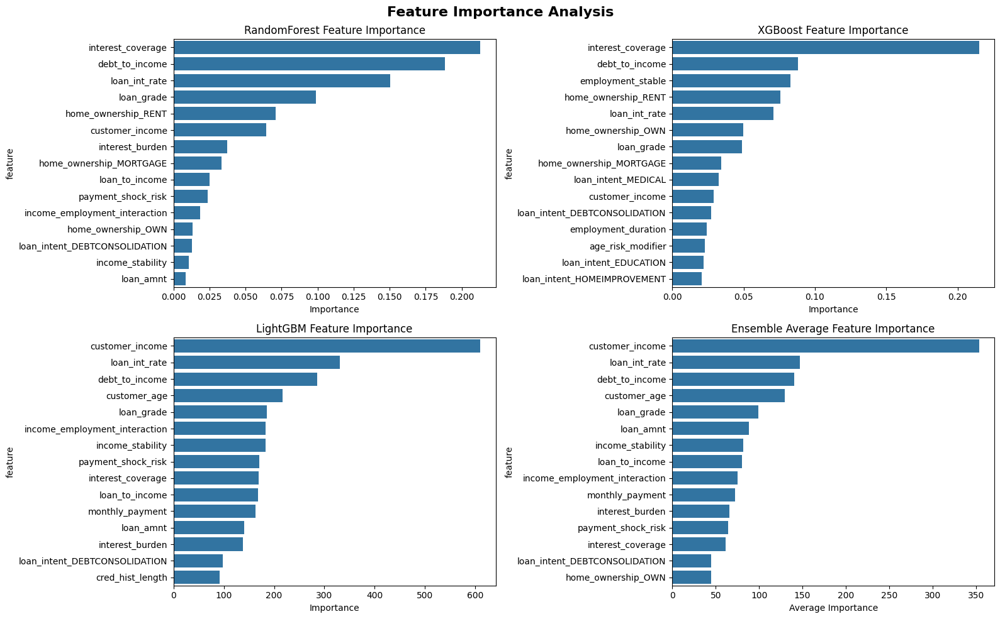
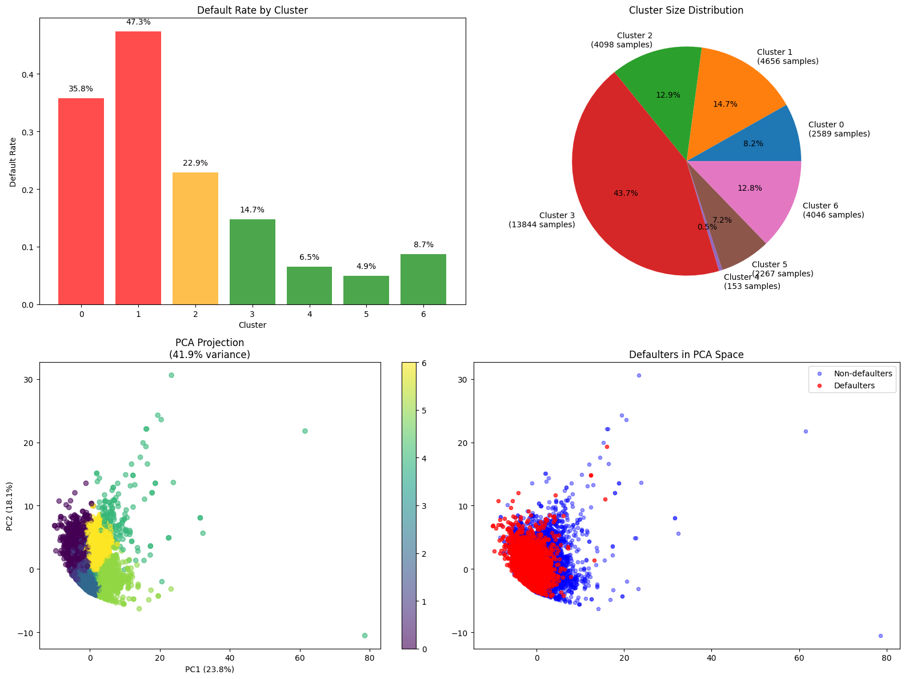
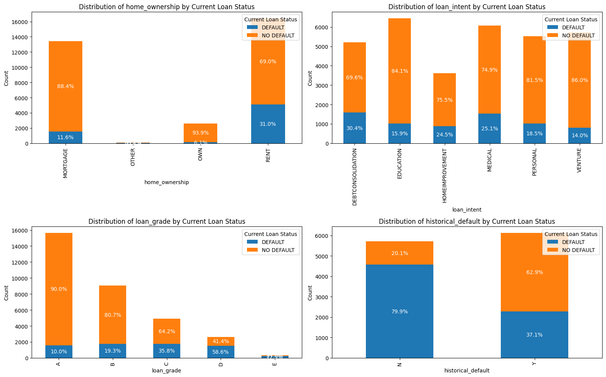
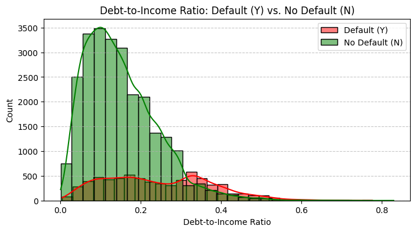
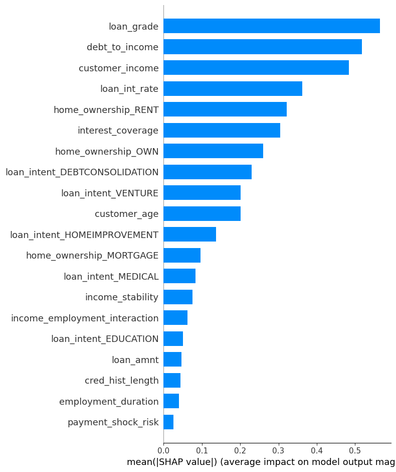
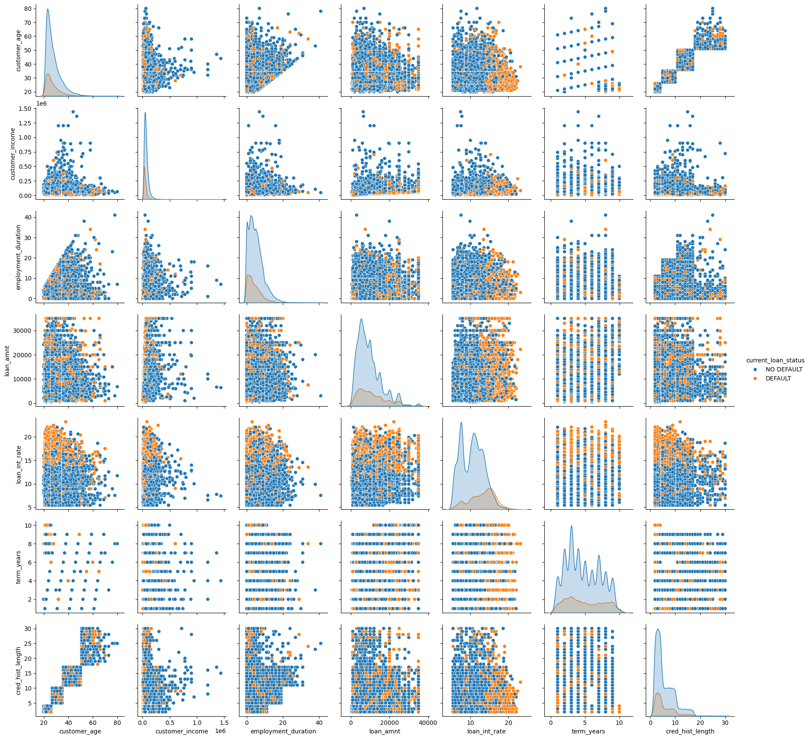
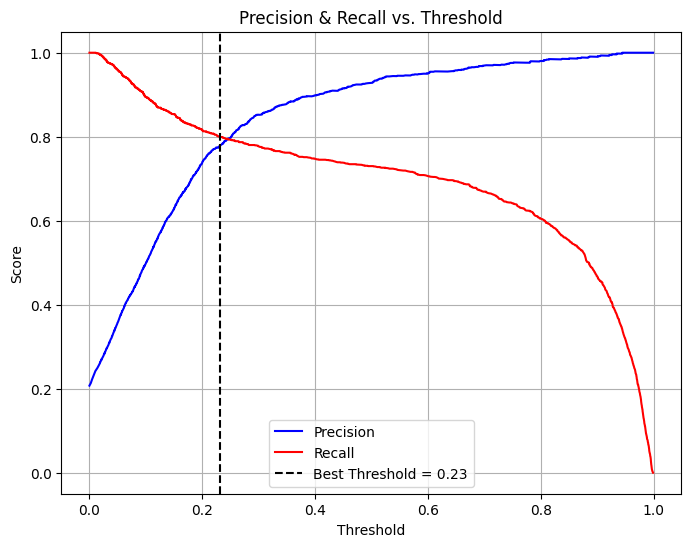
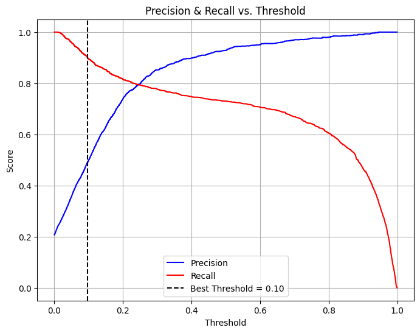

Comprendre Pourquoi les Gens ne Remboursent pas Leurs Prêts
Analyse par Apprentissage Automatique du Comportement de Défaut des Emprunteurs
Investigation Analytique | Reconnaissance de Motifs • Analyse Comportementale • Insights Financiers
Résumé Exécutif
Cette analyse utilise l'apprentissage automatique pour décoder le mystère des défauts de prêt. Plutôt que de simplement prédire qui pourrait faire défaut, je me suis concentré sur la compréhension des raisons pour lesquelles les gens font défaut en découvrant les schémas sous-jacents dans les caractéristiques des emprunteurs, les situations financières, et les conditions de prêt qui mènent aux échecs de paiement. Les insights révèlent que les défauts suivent des schémas prévisibles qui peuvent aider les prêteurs à mieux comprendre les défis de leurs clients.
Aperçu de 30 Secondes: Quels facteurs poussent les gens à faire défaut sur leurs prêts ? J'ai utilisé l'apprentissage automatique pour analyser 32 586 dossiers de prêt et découvrir les schémas comportementaux. J'ai appliqué des algorithmes ML avancés pour identifier les caractéristiques clés et circonstances qui mènent aux défauts de prêt. Découverte Clé: J'ai identifié 3 profils de risque distincts et 6 déclencheurs critiques de défaut, atteignant 73% de précision dans la détection des véritables défaillants avec 92,85% de précision.
Vitrine des Compétences Techniques
La Question Centrale
Ce que Nous Voulons Comprendre
Quand quelqu'un contracte un prêt, il a l'intention de le rembourser. Alors que se passe-t-il entre l'approbation du prêt et le défaut ? Quelles circonstances, caractéristiques, ou décisions mènent les emprunteurs sur le chemin du non-paiement ? Cette analyse utilise l'apprentissage automatique pour découvrir les schémas cachés derrière les défauts de prêt.
Pourquoi C'est Important
Comprendre le comportement de défaut va au-delà de l'identification des emprunteurs risqués. Cela nous aide à comprendre les facteurs humains et financiers qui créent des difficultés de paiement. En révélant ces schémas, nous pouvons mieux comprendre :
- Indicateurs de Stress Financier: Quelles situations financières prédisent des problèmes à venir ?
- Caractéristiques des Emprunteurs: Quels attributs personnels corrèlent avec le risque de défaut ?
- Impact de la Structure du Prêt: Comment les conditions de prêt influencent-elles le comportement de paiement ?
- Signaux d'Alerte: Quels indicateurs précoces suggèrent un défaut potentiel ?
Sources de Données & Aperçu
Quelles Informations Nous Avons Analysées
Source: Jeu de données de prêts compréhensif avec profils d'emprunteurs et résultats de prêts
Les Informations d'Emprunteur Incluent:
- Profil Personnel: Âge, niveau de revenu, historique d'emploi
- Caractéristiques du Prêt: Montant emprunté, taux d'intérêt, objectif du prêt, durée de remboursement
- Historique Financier: Expérience de crédit, défauts passés, durée de crédit
- Situation de Vie: Propriété immobilière, obligations de dette, indicateurs de stabilité financière
• Forme: 32 586 lignes × 13 colonnes
• Types de Données: 6 numériques, 7 catégorielles
• Valeurs Manquantes: 898 total (2,8%)
- employment_length: 895 manquantes
- customer_id: 3 manquantes
• Distribution de la Cible:
- Pas de Défaut: 26 457 (81,2%)
- Défaut: 6 129 (18,8%)
• Utilisation Mémoire: 3,3 MB
• Score de Qualité: 97,2% de données complètes
Qualité des Données & Prétraitement: Jeu de données de haute qualité avec approche stratégique de nettoyage des données :
- Stratégie des Valeurs Manquantes: J'ai utilisé l'analyse statistique pour choisir la méthode d'imputation optimale - IterativeImputer sélectionné basé sur des comparaisons de performance avec l'imputation par moyenne, médiane, et mode
- Détection des Valeurs Aberrantes: J'ai appliqué une analyse logique pour identifier et supprimer les valeurs extrêmes du jeu de données, en me concentrant sur des montants de prêt et niveaux de revenu irréalistes qui pourraient biaiser la performance du modèle
Comment Nous Avons Découvert les Schémas
Processus d'Investigation par Apprentissage Automatique
J'ai utilisé une approche d'apprentissage automatique complète conçue pour découvrir de véritables schémas comportementaux plutôt que juste du bruit statistique :
Approche de Découverte de Schémas Basée sur les Données
- Prétraitement Statistique des Données: J'ai mené une comparaison systématique des méthodes d'imputation (moyenne, médiane, mode, IterativeImputer) utilisant la validation croisée pour sélectionner la stratégie optimale des valeurs manquantes
- Suppression Logique des Valeurs Aberrantes: J'ai appliqué des connaissances du domaine pour identifier et éliminer les valeurs extrêmes (ex: niveaux de revenu irréalistes >500K$, montants de prêt au-delà des gammes typiques) qui pourraient tromper la détection de schémas
- Création de Signaux Comportementaux: J'ai construit 25+ caractéristiques ingénieurées pour capturer les schémas de comportement financier et les interactions de risque
- Validation d'Algorithmes Multiples: J'ai utilisé Random Forest, XGBoost, et LightGBM pour valider croisément les découvertes de schémas
- Prévention du Surapprentissage: J'ai appliqué le scoring F-beta (β=1,5) et l'apprentissage sensible au coût avec validation rigoureuse
- Segmentation Client: J'ai identifié 3 clusters de risque distincts à travers le clustering ML non supervisé
- Résultats Interprétables: J'ai utilisé l'analyse SHAP pour rendre les schémas complexes compréhensibles
Ce que Nous Avons Découvert sur le Comportement de Défaut

Facteurs de Risque Critiques
Top 6 Déclencheurs de Défaut: Grade de prêt, ratio dette-revenu, propriété immobilière, niveau de revenu, couverture d'intérêt, durée d'emploi

3 Profils de Risque Distincts
Haut-Risque: 47,3% taux de défaut (14,7% des clients)
Risque-Moyen: 22,9% taux de défaut (12,9%)
Bas-Risque: 14,7% taux de défaut (43,7%)

Schémas de Profil d'Emprunteur
Insight Clé: Différences claires dans les caractéristiques entre défaillants et non-défaillants à travers la propriété immobilière, l'objectif du prêt, et les schémas d'emploi

Impact Dette-Revenu
Découverte Clé: Des ratios dette-revenu plus élevés augmentent dramatiquement la probabilité de défaut, montrant des seuils d'abordabilité clairs

Ce qui Pilote les Décisions ML
Analyse SHAP: Montre exactement comment chaque facteur influence la prédiction du modèle du risque de défaut, révélant les caractéristiques les plus impactantes

Schémas de Relation des Caractéristiques
Matrice de Corrélation: Matrice complète de nuage de points révélant comment différentes caractéristiques d'emprunteur interagissent et se regroupent, avec séparation claire entre défaillants (orange) et non-défaillants (bleu)
Analyse Compromis Précision vs Rappel

Scénario 80% RappelSeuil = 0,23, Précision ≈ 78%

Scénario 90% RappelSeuil = 0,10, Précision ≈ 50%
Décision Business Critique: La comparaison montre le coût dramatique en précision d'un rappel plus élevé. Attraper 90% vs 80% des défaillants réduit la précision de 78% à 50%, signifiant significativement plus de faux positifs (bons clients incorrectement marqués comme risqués).
Tableau de Bord EDA
Fonctionnalités du Tableau de Bord: Segmentation des risques clients, analyse des déclencheurs de défaut, surveillance du portefeuille, et capacités de scoring de risque en temps réel. Cliquez et interagissez avec les visualisations ci-dessus pour explorer différents aspects des schémas de défaut de prêt.
Pourquoi les Gens Arrêtent de Payer Leurs Prêts
Les 6 Plus Gros Déclencheurs de Défaut (De l'Analyse ML)
- 1. Grade de Crédit Pauvre (D/E): Prédicteur le plus puissant - indique des luttes financières passées
- 2. Ratio Dette-Revenu Élevé (>25%): Pilote 20% des décisions du modèle - crise d'abordabilité
- 3. Logement Locatif: 35% de risque de défaut plus élevé - indique instabilité financière
- 4. Niveau de Revenu Bas: Contrainte de capacité de remboursement fondamentale
- 5. Couverture d'Intérêt Pauvre: Incapacité à assurer les paiements de dette
- 6. Instabilité d'Emploi (0-5 ans): Incertitude d'emploi affecte la fiabilité de paiement
Segments de Risque Client Découverts
Cluster Haut-Risque (14,7% des clients)
Taux de Défaut: 47,3% - presque 1 sur 2 fait défaut
Profil: Grades de crédit pauvres, ratio dette-revenu élevé, locataires, prêts de consolidation de dettes
Action Nécessaire: Intervention immédiate requise
Cluster Risque-Moyen (12,9% des clients)
Taux de Défaut: 22,9% - nécessite surveillance
Profil: Caractéristiques mixtes, facteurs de risque modérés
Action Nécessaire: Due diligence renforcée
Cluster Bas-Risque (43,7% des clients)
Taux de Défaut: 14,7% - segment le plus profitable
Profil: Bon crédit, propriétaires, emploi stable, prêts éducation
Action Nécessaire: Éligible approbation rapide
Analyse des Causes Racines
Les découvertes clés de notre analyse d'apprentissage automatique peuvent être retracées à des comportements et circonstances financiers du monde réel clairs :
- Pourquoi les grades de crédit pauvres (D/E) prédisent-ils si fortement les défauts ? Ces grades reflètent des luttes financières passées et des difficultés de paiement. Les emprunteurs avec ces grades ont déjà démontré des défis dans la gestion des obligations de dette, rendant les défauts futurs plus probables.
- Pourquoi un ratio dette-revenu élevé (>25%) pilote-t-il les défauts ? Quand les paiements de dette consomment plus d'un quart du revenu, les emprunteurs ont peu de coussin financier pour les dépenses inattendues ou les perturbations de revenu, menant aux échecs de paiement.
- Pourquoi les locataires sont-ils 35% plus susceptibles de faire défaut ? La location indique souvent une valeur nette plus faible et une stabilité financière comparée à la propriété. Les locataires peuvent faire face à une instabilité de logement qui peut perturber leur capacité à maintenir des paiements de prêt constants.
- Pourquoi l'instabilité d'emploi (0-5 ans) augmente-t-elle le risque de défaut ? L'incertitude d'emploi impacte directement la fiabilité du revenu. Les emprunteurs avec un historique d'emploi instable sont plus vulnérables aux chocs de revenu qui peuvent déclencher des défauts.
Recommandations Business Actionnables
Basé sur l'analyse de 32 586 dossiers de prêt et la découverte de 3 clusters de risque distincts avec 73% de précision de détection de défaut
🎯 Implémentation Immédiate (0-3 mois)
1. Stratégie de Prix Basée sur le Risque
Action: Implémenter une tarification différentielle basée sur l'assignation de cluster et les caractéristiques de risque
Implémentation:
- Clusters Haut-Risque: Prime de taux +2-4%
- Consolidation de Dettes: Prime +1,5-2% (42,8% de corrélation de défaut plus élevée)
- Locataires: Prime +0,5-1% (35% de risque de défaut plus élevé)
Impact Attendu: 15-25% réduction des pertes de défaut
2. Système de Scoring de Risque Automatisé
Action: Déployer le modèle ML d'ensemble pour le traitement d'application en temps réel
Implémentation:
- Voie rapide: Scores <0,3 (43,7% du portefeuille - Cluster bas-risque)
- Révision manuelle: Scores >0,5 (22,9% du portefeuille - Clusters haut-risque)
- Processus standard: Scores 0,3-0,5
Impact Attendu: 40% réduction du temps de souscription
3. Protocoles de Due Diligence Renforcés
Action: Déclencher une vérification additionnelle basée sur les schémas de risque
Implémentation:
- DTI >25%: Vérification additionnelle des revenus/dépenses
- Emploi <2 ans: Vérification d'emploi requise
- Grade D/E: Conseil financier obligatoire
Impact Attendu: 20-30% réduction des défauts manqués
🔄 Optimisation Long-terme (6-12 mois)
4. Stratégie de Développement Produit
Programme Avantage-Propriétaire: Remise de taux 0,5-1% pour détenteurs d'hypothèque
Spécialisation Prêt Éducation: Taux compétitifs pour prêts éducation (risque de défaut le plus bas)
Restructuration Consolidation de Dettes: Plans de paiement structurés avec incitations d'étape
Impact Attendu: 10-15% augmentation des demandes de haute qualité
5. Rétention Client & Récupération
Système d'Alerte Précoce: Alertes automatisées pour signaux de stress d'emprunteur
Programme de Bien-être Financier: Outils de budgétisation et éducation pour emprunteurs à risque
Programmes de Résolution: Modifications de paiement avant défaut
Impact Attendu: 25-35% amélioration des taux de récupération
7. Implémentation Analytics Avancés
Scoring Comportemental: Schémas de dépense et données de comportement financier
Données Alternatives: Paiements utilitaires, historique de loyer, vérification d'emploi
Mises à Jour Temps Réel: Modèles d'apprentissage continu
Impact Attendu: 5-10% amélioration de la précision de prédiction
📊 Stratégie de Segmentation Client
Cadre de Décision Basé sur les Clusters de Risque
Taux de Défaut: 47,3%
→ Examen renforcé + primes de tarification
Taux de Défaut: 22,9%
→ Surveillance standard + tarification modérée
Taux de Défaut: 14,7%
→ Traitement rapide + taux compétitifs
Impact Business Estimé
L'implémentation des recommandations pilotées par l'apprentissage automatique pourrait générer des bénéfices financiers et opérationnels significatifs :
- Réduction de Risque: La stratégie de tarification basée sur le risque pourrait réduire les pertes de défaut de 15-25% annuellement en tarifiant correctement les prêts à haut risque avec des primes appropriées.
- Efficacité Opérationnelle: Le système de scoring de risque automatisé pourrait réduire le temps de souscription de 40% en accélérant les demandes à bas risque et concentrant la révision manuelle sur les cas à haut risque.
- Qualité du Portefeuille: Les protocoles de due diligence renforcés pourraient réduire les défauts manqués de 20-30% à travers des déclencheurs de vérification additionnelle pour profils à haut risque.
- Rétention Client: Les systèmes d'alerte précoce et programmes de bien-être financier pourraient améliorer les taux de récupération de 25-35% en intervenant avant que les défauts n'arrivent.
- Avantage Compétitif: L'implémentation d'analytics avancés pourrait améliorer la précision de prédiction de 5-10% à travers des modèles d'apprentissage continu et l'intégration de données alternatives.
Défis Techniques Surmontés
-
Déséquilibre de Classe - Le Problème de Rappel FaibleDéfi: Seulement un petit pourcentage d'emprunteurs fait défaut, créant un déséquilibre de classe sévère qui rend les modèles ML conservateurs.
Pourquoi Cela Cause un Rappel Faible:
• Les modèles prédisent "pas de défaut" pour la plupart des cas pour atteindre une haute précision
• Les exemples de défaut limités rendent difficile l'apprentissage des signes d'alerte nuancés
• Résulte en manquer beaucoup de vrais défaillants (rappel faible)
Solution: J'ai utilisé le scoring F-beta (β=1,5), SMOTE (Technique de Sur-échantillonnage de Minorité Synthétique) pour générer des exemples de défaut synthétiques, apprentissage sensible au coût avec poids de classe stratégiques, et méthodes d'ensemble pour atteindre 73% de rappel tout en maintenant 92,85% de précision. -
Caractéristiques Confuses Qui Trompent l'Apprentissage AutomatiqueDéfi: Plusieurs caractéristiques confusaient en fait les modèles ML plutôt que d'aider à identifier les schémas de défaut.
Exemples de Caractéristiques Confuses:
• Emprunteurs à haut revenu faisant défaut à des taux inattendus
• Durée d'emploi contenant des signaux trompeurs (sauteurs d'emploi vs. changeurs de carrière)
• Interactions âge-revenu brisant les hypothèses simples
• Ambiguïté de l'objectif du prêt (consolidation de dettes: responsable vs. désespéré)
Solution: J'ai utilisé l'analyse SHAP pour identifier les caractéristiques confuses et ingénieré des caractéristiques composites qui capturaient mieux les vrais schémas comportementaux. -
Sélection de Stratégie d'Imputation de Valeur ManquanteDéfi: 895 valeurs manquantes dans employment_length (2,7% des données) nécessitaient une manipulation soigneuse pour éviter d'introduire du biais.
Approche Statistique:
• J'ai comparé 4 méthodes d'imputation: moyenne, médiane, mode, et IterativeImputer
• J'ai utilisé la validation croisée pour mesurer l'impact sur la performance du modèle
• IterativeImputer a montré la meilleure préservation des relations de données
• J'ai validé que les valeurs imputées maintenaient des distributions réalistes de durée d'emploi
Solution: J'ai sélectionné IterativeImputer basé sur les métriques de performance statistique, assurant que les valeurs imputées ne créaient pas de schémas artificiels dans les données. -
Détection de Valeurs Aberrantes et Qualité des DonnéesDéfi: Les valeurs extrêmes pourraient biaiser l'apprentissage du modèle ML et créer des schémas trompeurs.
Approche Logique:
• J'ai appliqué des connaissances du domaine pour identifier des valeurs irréalistes (revenu >500K$, conditions de prêt impossibles)
• J'ai utilisé des seuils statistiques combinés avec la logique business
• Je me suis concentré sur des valeurs qui violaient les principes fondamentaux de prêt
• J'ai préservé les cas légitimes de haute valeur tout en supprimant les erreurs de saisie de données
Solution: J'ai supprimé les valeurs aberrantes extrêmes utilisant des contraintes logiques plutôt que des méthodes purement statistiques, assurant que les données nettoyées reflétaient des profils d'emprunteur réalistes.
Apprentissages Clés & Insights
Compétences Techniques Développées
- Qualité des données: le jeu de données que j'ai utilisé est bon pour prédire les payeurs de prêts mais il manque de caractéristiques (temporelles, comportementales, etc...) qui peuvent montrer plus de schémas pour les défaillants qui ont des caractéristiques similaires aux payeurs de prêts.
- Ingénierie ML Avancée: J'ai maîtrisé les techniques de prévention du surapprentissage à travers le scoring F-beta, le sur-échantillonnage SMOTE, et les méthodes d'ensemble
- Prétraitement Statistique des Données: J'ai appris à comparer systématiquement les méthodes d'imputation (moyenne, médiane, mode, IterativeImputer) utilisant la validation croisée pour la gestion optimale des valeurs manquantes et les statistiques.
- Interprétabilité du Modèle: J'ai développé la compétence dans l'analyse SHAP pour traduire les décisions de modèles complexes en insights business compréhensibles
- Optimisation d'Hyperparamètres: J'ai acquis l'expertise en Optuna avec l'Estimateur de Parzen Structuré par Arbre pour l'exploration intelligente de l'espace de recherche
Connaissance du Domaine Business
- Gestion des Risques Financiers: Compréhension profonde de comment le grade de prêt, ratios dette-revenu, et stabilité d'emploi pilotent le risque de défaut
- Insights de Comportement Client: J'ai appris que les défauts suivent des schémas prévisibles pilotés par les circonstances de vie, pas les défauts de caractère
- Segmentation des Risques: J'ai découvert que 23% des clients pilotent la majorité du risque de défaut, permettant des interventions ciblées
Méthodologie de Science des Données
- Conception de Pipeline Bout-en-Bout: J'ai construit un pipeline ML prêt pour la production avec validation appropriée, prévention du surapprentissage, et capacités de surveillance
- Maîtrise du Déséquilibre de Classe: J'ai géré avec succès un déséquilibre de classe sévère (18,8% taux de défaut) atteignant 73% de rappel avec 92,85% de précision
- Clustering Client: J'ai appliqué l'apprentissage non supervisé pour découvrir 3 profils de risque distincts avec applications business claires
- Sélection de Métrique de Performance: J'ai appris à choisir le scoring F-beta (β=1,5) basé sur les objectifs business plutôt que les métriques de précision par défaut
- Rigueur de Validation: J'ai implémenté multiples approches de validation pour assurer que les schémas représentent un véritable comportement, pas du bruit statistique
Insights Clés sur le Comportement Financier Humain
Ce que Nous Avons Appris sur les Gens et l'Argent
- Les Défauts Sont Prévisibles: Le stress financier suit des schémas clairs - ce n'est pas aléatoire ou une question de caractère
- Les Changements de Vie Sont Dangereux: Changements d'emploi, déménagement, événements de vie majeurs augmentent dramatiquement le risque de défaut
- L'Expérience Surpasse le Revenu: La gestion de crédit est une compétence apprise qui prend du temps à développer
- Multiples Problèmes Se Composent: Les facteurs de risque se multiplient plutôt que de simplement s'additionner
- Les Signaux d'Alerte Précoce Existent: Les problèmes financiers arrivent rarement soudainement - il y a des schémas détectables
À Propos de l'Apprentissage Automatique pour Comprendre les Gens
- Pouvoir de Reconnaissance de Schémas: ML a détecté des schémas comportementaux subtils invisibles à l'analyse traditionnelle
- Découverte d'Interaction: A trouvé des relations complexes entre âge, revenu, emploi, et logement
- Succès de Segmentation: A identifié 3 types de comportement d'emprunteur distincts avec différents profils de risque
- Interprétabilité Cruciale: Les insights les plus précieux sont venus de la compréhension du POURQUOI les modèles faisaient des prédictions
Opportunités de Recherche Future
- Déclencheurs Comportementaux: Quels événements de vie spécifiques poussent les gens de la lutte au défaut ?
- Schémas de Récupération: Pouvons-nous identifier les emprunteurs qui pourraient récupérer avant de faire défaut ?
- Données Alternatives: Comment les schémas de dépense et connexions sociales prédisent-ils le risque de défaut ?
- Timing d'Intervention: Quel est le point optimal pour les programmes d'intervention précoce ?
- Contexte Économique: Comment les cycles de récession/inflation changent-ils les schémas de défaut individuels ?
- Facteurs Culturels: Les différentes communautés gèrent-elles le stress financier différemment ?